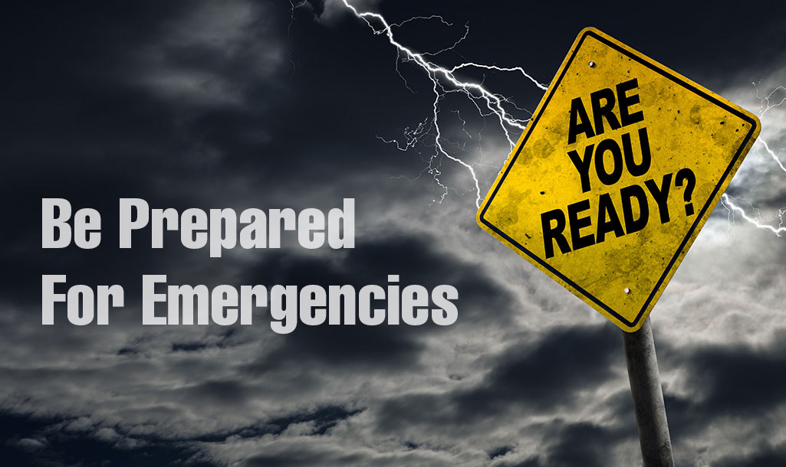

[For educational purposes only. Check official sites for emergency readiness advice.]

Being prepared, just in case of an emergency, is a good idea. Many things can suddenly happen in life; hurricanes, earthquakes, blizzards, power outages, and even war. Here are a few things you should know in order to be prepared.
Depending on the type of emergency, lack of power and damaged cell towers will likely hinder communications. But some cell towers have backup power and may still work. So it’s a good idea to keep your cell phone charged at all times. On a daily basis, don’t let the charge on your phone get too low before recharging. Also, have extra power banks, at least two or three, and rotate them for daily use so that at least one or two is always full. Your cell phone can save you if you’re trapped somewhere, and it might be your only chance to contact loved ones.
One thing everyone needs in order to survive is water. Although it is suggested to keep 14 gallons of water per person on hand, at the least, keep several cases of bottled water in storage.
The other thing people need is food. Keep plenty of food in your food pantry or storage area. You can do this buy buying a months supply of rice and noodles. Then every week as you shop, you replenish those supplies and rotate them (put the old to the front and put the new to the back). Other things that are easy to store are milk powder, sports drink powders, sports protein powders, beans, nuts, dried fruits, multivitamins, and other long-lasting canned or jarred foods.
The next thing you should have on hand is a first aid kit. If someone is injured, you’ll need some basic medical supplies. Here are a few things you can put in your first aid kit.
If anyone in your family has medical conditions, keep extra medication on hand and in a safe dry place. Ask your doctor to give you an extra week or two of medicine and then rotate the old with the new each time you refill your prescription.
Even in emergency situations, we want to stay as clean as possible. Keep extra items on hand like paper towels, tissue, extra bars or bottles of soap, and other personal hygiene products of your choice.
Other things you might need.
No matter what the situation, you always have to find ways to pass the time. Buy a deck of cards and learn some card games to help pass the time. Other games are fine too, especially travel size games. Remember, you probably won’t be able to use your cell phone for entertainment.
And finally, it never hurts to keep a bit of extra cash around. If the power’s out, you won’t be able to pay for things with a credit card or mobile pay.